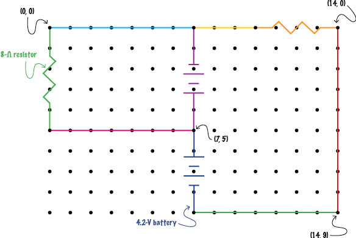

Overview:
CircuitSurveyor circuits are specified on a rectangular grid of points. Each circuit element (wire, resistor, or battery) must be positioned horizontally or vertically with both endpoints on a gridpoint. Adjacent elements' endpoints share a gridpoint.
Complete example:
This custom circuit file...
...would result in this circuit. (Colors added for illustrative purposes only)
# Here is a complete circuit file! This is an
# introductory comment, followed by some blank lines!
15,10
w 0,5 9,5
r 10,0 14,0 23 # This line describes a 23-ohm resistor
b 7,0 7,5 15.16
w 0,0 7,0 # Due to the intersection with the battery,
w 7,0 10,0 # this wire must be described in two pieces.
# The previous line was left blank. The following line
# describes a 4.2-volt battery, with its positive
# terminal upward:
b 7,9 7,5 4.2
w 14,9 14,0
w 7,9 14,9 # Another in-line comment
r 0,5 0,0 8.0 What to do:
1. Create the file.
Create a text file (with a .txt extention). Note that the name of the file is how CircuitSurveyor will list the circuit in the list of available circuits, so name your file with this in mind.
2. Specify the grid.
In the first (uncommented, non-blank) line of the text file, specify the size of the grid on which the circuit will be described, using the format
xSize,ySize i.e., the number of gridpoints in the x-direction as an integer, a comma, the number of gridpoints in the y-direction. Grid points are addressed with (0, 0) in the upper-left-hand corner of the grid and (xSize-1, ySize-1) in the lower-right-hand corner. For example, the line
50,40 describes a grid 50 gridpoints wide by 40 gridpoints tall, ranging from point (0, 0) in the top-left corner to point (49, 39) in the bottom-right corner (show illustration).
Note: The resolution with which CircuitSurveyor calculates its vectors and fields is directly related to the resolution of the grid specified in the circuit. For best performance, we recommend a grid with width and height between 75 and 250 points.
3. Specify the circuit elements.
In each subsequent (uncommented, non-blank) line of the file, specify one circuit element that appears in the circuit. Each element must be positioned either horizontally or vertically, with both of its endpoints on a gridpoint. Adjacent elements' endpoints share a gridpoint to indicate they touch; elements must not share a gridpoint except at their endpoints (show example).
The elements in a circuit file may be listed in any order, so long as, taken in totality, they comprise a complete circuit.
Wires
If the element is a wire, use the format
w xStart,yStart xEnd,yEndi.e., the letter w (for wire), a space, the x-coordinate of one endpoint of the wire as an integer, a comma, the y-coordinate of that endpoint as an integer, a space, the x-coordinate of the other endpoint as an integer, a comma, the y-coordinate of that endpoint as an integer.Resistors
If the element is a resistor, use the format
r xStart,yStart xEnd,yEnd resistancei.e., the letter r (for resistor), a space, the x-coordinate of one endpoint of the resistor as an integer, a comma, the y-coordinate of that endpoint as an integer, a space, the x-coordinate of the other endpoint as an integer, a comma, the y-coordinate of that endpoint as an integer, a space, the resistance of the resistor in ohms as an integer or decimal.Batteries
If the element is a battery, use the format
b xStart,yStart xEnd,yEnd voltagei.e., the letter b (for battery), a space, the x-coordinate of the negative-terminal endpoint of the battery as an integer, a comma, the y-coordinate of that endpoint as an integer, a space, the x-coordinate of the positive-terminal endpoint as an integer, a comma, the y-coordinate of that endpoint as an integer, a space, the voltage of the battery in volts as an integer or decimal.Note that the order in which the endpoints of an element are specified is reversible with no consequence in the case of the wire and the resistor, but in the battery, the first endpoint specified will be taken as the location of the negative terminal (show example) .
4. Add comments.
Anywhere within a circuit file, any characters appearing between a hash-mark (#) and the end of a line will be treated as a comment and therefore ignored by CircuitSurveyor. Any completely blank lines will also be ignored.
5. Add your new circuit to CircuitSurveyor.
Once you have completed the creation of your circuit file, you can add it to the list of available circuits in CircuitSurveyor. Open CircuitSurveyor and click the Add new... button. (Note that this may pop up a warning notifying you that CircuitSurveyor is requesting access to your local machine. Say OK to this.
Navigate to wherever on your file system your circuit file is saved and select it. (Note that you can use the Control (Windows)/Command (Mac) and Shift keys in the usual ways to select multiple files, if you wish to add several at once.)
Note: Custom circuits added to CircuitSurveyor will remain available in the drop-down list only for the rest of the working session. If CircuitSurveyor is closed and reopened, any custom circuits will need to be re-added to the list if you wish to use them again.
CircuitSurveyor was created in 2010–11 by Noah Morris, a student of Oberlin College, under the advisement of Oberlin College Professor of Physics Dan Styer.
CircuitSurveyor is released to the public under the terms of the GNU General Public License, version 3. There is no warrantee. For the full terms, see here.